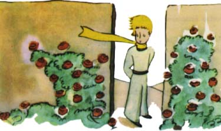

"Dobrý den," øekl.
Byla to zahrada plná rù¾í.
"Dobrý den," odpovìdìly rù¾e.
Malý princ se na nì zadíval. V¹echny se podobaly jeho kvìtinì.
"Kdo jste?" zeptal se jich u¾asle.
"Jsme rù¾e," øekly rù¾e.
"Ó," øekl malý princ...

A cítil se hroznì ne¹»astný. Jeho kvìtina mu vypravovala, ¾e je jediná svého druhu ve vesmíru. A tady jich bylo pìt tisíc v jediné zahradì, jedna jako druhá!
Stra¹nì by ji to mrzelo, øekl si, kdyby to vidìla... Moc by ka¹lala a pøedstírala by, ¾e umírá, jen aby nebyla smì¹ná. A musel bych dìlat, ¾e o ni peèuji, nebo» jinak by radìji opravdu umøela, jen aby mì taky pokoøila...
Potom si je¹tì øekl: Myslil jsem, ¾e jsem bohatý, ¾e mám jedineènou kvìtinu, a zatím mám jen obyèejnou rù¾i. Ta rù¾e a mé tøi sopky, které mi sahají po kolena a z nich¾ jedna je mo¾ná nav¾dy vyhaslá, nedìlají ze mne moc velikého prince... A lehl si do trávy a plakal.